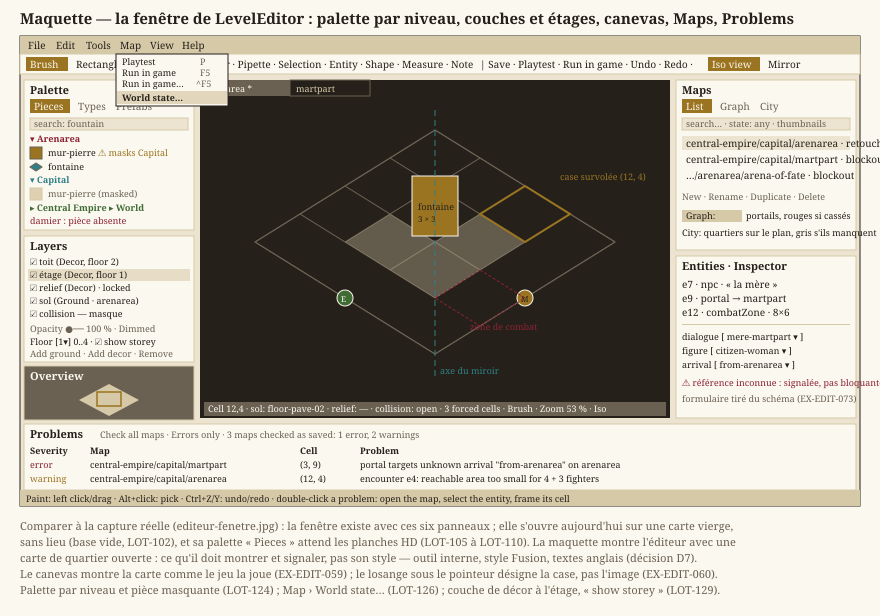

Éditeur de cartes
Statut : livré.
LevelEditorpeint les trois couches d'une carte, pose et renseigne ses entités, montre le graphe du monde, avertit d'un terrain tactique invalide, et joue la carte en cours avec le moteur du jeu. Dépend deniveaux.md.
Refonte décidée le 18 septembre 2026. L'éditeur est devenu un module à part, refait lot par lot. Sa feuille de route propre a été close le 21 septembre 2026 : ses quatorze lots
LOT-EDITORsont des fiches de la version0.0.0, et ce qu'il doit encore apprendre est la filièreediteurdu planning. Cette page reste sa spécification ; chaqueLOT-EDITORrévise les exigences qu'il touche. Le LOT-EDITOR-01 a déplacé le code dansSource/Editor, fait de l'éditeur un outil interne (style Fusion, textes anglais, sans charte) et ajouté la section 8.
Objectif
Permettre la création et la modification des cartes sans écrire de code ni de JSON, afin que des membres de l'équipe non-développeurs (game design, level design) contribuent directement au contenu du jeu.
Les vingt sections qui suivent détaillent l'outil panneau par panneau ; la maquette d'ensemble ci-dessous dit d'abord à quoi elles se rapportent.
{kind=link}

Six panneaux, et une règle qui les relie : ce que l'éditeur montre est ce que le jeu jouera (EX-EDIT-059). Le canevas compose la scène avec le même code que le jeu, le losange sous le pointeur désigne une case et non une image (EX-EDIT-060), et un problème du panneau du bas s'ouvre d'un double-clic sur la carte, l'entité et la case concernées.
Note — La maquette montre l'éditeur avec un quartier ouvert. L'outil existe aujourd'hui avec ces six panneaux, mais s'ouvre sur une base vide (
LOT-102) et sa palette attend les planches HD (LOT-105→LOT-110). Le style, lui, n'est pas une question ouverte : outil interne, Fusion, textes anglais.
1. Exigences fonctionnelles
- EX-EDIT-001 — L'éditeur doit permettre de créer et modifier une carte sans compétence en programmation ni ligne de commande.
- EX-EDIT-002 — L'édition doit être directe : une grille visuelle où l'on peint à la souris, depuis une palette. Révisée au
LOT-EDITOR-03: la palette est d'abord la planche du lieu — on y choisit une pièce, dessinée par son image (EX-EDIT-063) —, et les types de tuile, chacun de la couleur que le canevas lui donne, restent le repli d'une carte sans lieu et le vocabulaire de la collision. - EX-EDIT-004 — L'éditeur doit permettre de poser l'entrée de la carte, unique : la poser ailleurs la déplace.
- EX-EDIT-005 — L'éditeur doit permettre de redimensionner la grille et de gérer annuler/refaire.
- EX-EDIT-006 — L'éditeur doit enregistrer et charger au format JSON défini par
EX-LVL-003, en produisant des fichiers valides. - EX-EDIT-007 — L'éditeur doit valider la carte avant enregistrement (entrée présente et unique, dimensions cohérentes —
EX-LVL-004) et signaler les erreurs de façon compréhensible par un non-codeur. - EX-EDIT-008 — L'éditeur doit permettre d'essayer la carte immédiatement, sans l'enregistrer, pour un cycle création → essai rapide (
EX-EDIT-055). - EX-EDIT-009 — L'éditeur doit permettre de nommer une carte à sa création et de la renommer, et avertir avant d'écraser un fichier existant différent de la carte en cours d'édition.
2. Réutilisation & cohérence
- EX-EDIT-010 — L'éditeur doit réutiliser le modèle de carte et la validation de
Core— aucune duplication de la logique de carte entre le jeu et l'éditeur. - EX-EDIT-011 — Une carte enregistrée par l'éditeur doit être directement jouable par le jeu sans conversion, et réciproquement. Ce que l'éditeur ne sait pas modifier, il doit le transporter : les pièces assignées par case, les propriétés libres des couches et des entités (
EX-LVL-018) traversent un cycle ouvrir/enregistrer sans perte — un éditeur qui efface en silence ce qu'il n'affiche pas est pire qu'un éditeur incomplet. - EX-EDIT-043 — La pièce nommée par une case de couche (
"piece",EX-LVL-019) doit être conservée par l'éditeur, et retirée si l'on repeint la case d'un autre type. Révisée auLOT-EDITOR-12: la pièce quitte la grille de collision ("texture"d'une v3) pour sa couche. Révisée auLOT-EDITOR-03: la poser est l'affaire de l'éditeur (EX-EDIT-064).
3. Distribution & collaboration
- EX-EDIT-020 — L'éditeur doit être fourni comme un outil exécutable que les non-codeurs lancent sans étape de build.
- EX-EDIT-021 — Les cartes sont des fichiers rangés dans
Source/Elements/Levelset versionnés ; l'éditeur enregistre directement à cet emplacement. - EX-EDIT-022 — Le partage des cartes passe par Git via une interface graphique (type GitHub Desktop) : les cartes sont versionnées dans le dépôt au même titre que le reste du projet, publiées et récupérées sans ligne de commande. Un court guide est fourni dans le manuel.
4. Approche d'implémentation (décidée)
Un outil d'auteur à part, et un mode intégré au jeu qui n'en est pas un. L'édition de contenu vit dans LevelEditor, un exécutable Qt Widgets distinct du jeu ; l'édition dans la scène, depuis le jeu, est l'arène du LOT-50.
- EX-EDIT-030 — L'outil d'auteur est un exécutable distinct du jeu (
LevelEditor), qui partage le code du jeu mais pas sa technologie d'interface : le jeu ne lie pas Qt Widgets (EX-IHM-102). Le mode intégré au jeu est l'arène, un bac à sable de débogage où l'on pose des combattants et rejoue à graine fixée — pas un outil qui produit du contenu versionné. Refondue auLOT-11(décision de l'auteur, 16 septembre 2026) : retargerLevelEditorplutôt que reconstruire l'édition dans la scène en Qt Quick. - EX-EDIT-031 — L'éditeur réutilise le rendu du jeu (QRhi,
hmi::SceneResources, composition deHMI), le modèle et la validation de carte deCore, et, pour l'essai, la mise en scène du jeu elle-même (hmi::WorldPlay,hmi::WorldSceneRenderer) — sans duplication.
5. Non-objectifs
- Édition collaborative en temps réel.
- Édition des assets graphiques et sonores : l'éditeur agence des cartes, il ne dessine pas les planches. Les planches de lieux et les figurines viennent de leurs ateliers (
LOT-92,LOT-91). - Sélection multiple non contiguë de cases et historique annuler/refaire par delta (l'historique par instantanés complets reste adapté à la taille des cartes du projet). Les entités, elles, se sélectionnent à plusieurs (
EX-EDIT-072).
6. Robustesse et confort d'édition
- EX-EDIT-012 — L'éditeur doit demander confirmation avant toute action destructrice : un redimensionnement qui supprimerait l'entrée, une entité ou une pièce assignée, et l'ouverture d'une autre carte alors que des modifications ne sont pas enregistrées.
- EX-EDIT-013 — L'éditeur doit permettre de déplacer (pan) et de zoomer la vue indépendamment du cadrage automatique, pour éditer confortablement des cartes de toute taille.
- EX-EDIT-014 — Au-delà de la peinture case par case, l'éditeur doit fournir un outil de remplissage rectangulaire et un outil de sélection avec copier/coller d'une zone de tuiles. Révisée au
LOT-EDITOR-04:Supprgomme la sélection en un pas ; les autres outils du peintre sont enEX-EDIT-066. - EX-EDIT-015 — L'éditeur doit exposer ses commandes de façon découvrable à l'écran : une barre d'outils pour changer d'outil, un aperçu des raccourcis clavier, et des libellés sur les entrées de la palette.
- EX-EDIT-017 — L'éditeur doit permettre de saisir directement une largeur et une hauteur cibles, sous un plafond généreux qui reste configurable au niveau du code, pas une limite arbitraire de
Core. - EX-EDIT-018 — La palette doit regrouper les types de tuiles en catégories (Tuile, Jalon, Sol, Obstacle, Passage) plutôt qu'en liste plate, et rester entièrement accessible par défilement quand tout est déplié. Révisée au
LOT-EDITOR-03: c'est l'onglet « Types » de la palette ; les pièces du lieu ont le leur, groupé par classe (EX-EDIT-063). - EX-EDIT-023 — L'éditeur doit afficher, en superposition de la grille de tuiles, un quadrillage de repère case par case (bascule
F10), sans effet sur le cadrage.
7. Couches, entités et monde (LOT-11)
- EX-EDIT-048 — L'éditeur doit peindre les trois couches d'une carte : un sélecteur de couche active désigne la grille que visent le pinceau, le rectangle, la copie et le collage — la collision (grille racine, qui porte seule l'entrée) ou une couche visuelle (sol, décor). Une couche visuelle refuse l'entrée, qui porte une règle, en le disant. Couches visuelles ajoutées, retirées, renommées, changées de rôle et réordonnées, chaque geste annulable (
EX-EDIT-005). Ajouter la première couche visuelle à une carte à grille unique y recopie l'image de la grille. Concrétisé auLOT-11. - EX-EDIT-049 — L'éditeur doit régler la visibilité et l'opacité de chaque couche, pour voir le sol sous le décor. Ce réglage est une aide d'édition : ni annulable, ni enregistré. Sur une carte à couches, la collision se montre par-dessus en masque coloré par catégorie (obstacle, entrée), pas en image. Concrétisé au
LOT-11. - EX-EDIT-050 — L'éditeur doit poser, sélectionner, déplacer et retirer des entités par un outil dédié, et en éditer les propriétés dans un panneau dont le formulaire est dérivé de la table des familles (
core::knownEntityKinds,niveaux.md) — une famille ou une propriété ajoutée à la table y apparaît sans toucher au panneau. Une entité d'un type inconnu, et toute propriété que la table ne déclare pas, sont montrées et transportées (EX-EDIT-011). Chaque geste est annulable. Une entité sans illustration se dessine par le marqueur généré de sa famille (EX-CNT-041). Concrétisé auLOT-11. Révisée auLOT-EDITOR-05: les zones se tirent et se redimensionnent, les entités se sélectionnent à plusieurs (EX-EDIT-070àEX-EDIT-073). - EX-EDIT-051 — Une propriété qui référence une donnée hors de la carte doit se choisir dans ce qui existe : dialogues acceptés au chargement, rencontres, cartes, points d'arrivée de la carte cible. Une référence cassée est signalée dans le panneau, à sa case, sans empêcher d'enregistrer : une carte s'écrit dans le désordre, le portail vers la forêt avant la forêt. Concrétisé au
LOT-11. - EX-EDIT-052 — L'éditeur doit poser des portails — une carte cible et un point d'arrivée nommé, jamais des coordonnées — et des points d'arrivée dont le nom est unique dans la carte (
niveaux.md). Concrétisé auLOT-11. - EX-EDIT-053 — Le navigateur de cartes doit offrir une vue du graphe du monde : les cartes, les portails qui les relient, et, visiblement distincts, les portails cassés. Ouvrir une carte depuis le graphe suit le même garde-fou que depuis la liste (
EX-EDIT-012). Concrétisé auLOT-11. - EX-EDIT-054 — Le combat se jouant sur la carte d'exploration, l'éditeur doit avertir quand une rencontre posée n'est pas un terrain tactique valide : un combattant de sa formation hors de la carte, sur un obstacle ou sur un autre — selon la règle même du montage d'une rencontre (
core::BattleGrid::place) —, ou une zone atteignable en un déplacement depuis le déclencheur trop petite pour la rencontre et un groupe de quatre (core::analyzeEncounterTerrain, seuils nommés). Avec l'outil « Entité », la zone et la formation de la rencontre sélectionnée se voient sur la carte. Concrétisé auLOT-11. - EX-EDIT-055 — L'essai immédiat (
EX-EDIT-008) doit jouer la carte en cours avec la mise en scène du jeu (hmi::WorldPlay) : même lieu, mêmes figurines, mêmes portails ; un portail qui ramène à la carte éditée retrouve le brouillon, pas le fichier. Ce que l'éditeur n'ouvre pas — un dialogue, un combat — est dit dans la barre d'état plutôt que tu. Refondue auLOT-88.
8. Le socle du module (LOT-EDITOR-01)
Un outil d'atelier dure si l'on n'y perd jamais de travail. Ces trois exigences viennent du socle du module (LOT-EDITOR-01).
- EX-EDIT-056 — L'éditeur doit sauvegarder automatiquement un brouillon modifié, hors du dépôt, peu après chaque geste, et proposer de le reprendre au démarrage suivant quand la session précédente ne s'est pas terminée normalement. Un brouillon que l'auteur refuse de reprendre est mis de côté, pas effacé. Fermer l'éditeur avec des modifications demande s'il faut les enregistrer.
- EX-EDIT-057 — Une carte ouverte changée sur disque (par un script, un autre outil, un changement de branche) ne doit jamais être écrasée en silence. Brouillon intact : la carte est relue. Brouillon modifié : l'auteur choisit de relire le disque ou de garder son brouillon, et la version écartée est mise de côté avant tout. La comparaison porte sur le contenu du fichier, pas sur sa date.
- EX-EDIT-058 — L'historique d'annulation est plafonné (le pas le plus ancien est oublié au-delà), et l'état « modifié » suit le contenu : défaire jusqu'à l'état enregistré rend une carte non modifiée, et un geste sans effet (repeindre une case du même type) ne la modifie pas.
9. Le canevas qui montre le lieu (LOT-EDITOR-02)
On édite sur le lieu tel qu'on le jouera. Ces trois exigences viennent du canevas du module (LOT-EDITOR-02).
- EX-EDIT-059 — Le canevas doit montrer la carte en isométrie, comme le jeu : la liste de primitives est celle que compose le jeu (
hmi::composeWorldScene), dans le même ordre, et son image rendue hors écran égale celle du jeu à une tolérance près. Une bascule montre la carte à plat, une case par unité et les types en couleurs, pour lire types et collision. Le canevas ne peint que la partie visible. - EX-EDIT-060 — Le pointage désigne la case dont le losange est sous le pointeur, jamais l'image qui la couvre : sous un relief haut, on pointe la case de derrière. Il prend la hauteur en paramètre (réserve de la décision D11), et reste juste aux quatre coins de la carte. La case survolée, ses coordonnées et ses pièces se lisent à l'écran.
- EX-EDIT-061 — Une couche peut être masquée, grisée ou verrouillée (visible, mais aucun geste ne la peint) ; les reliefs peuvent passer en transparence ; une mini-carte montre toute la carte et le cadre de la vue, et ramène la vue d'un clic. Ce sont des aides d'édition : rien n'est enregistré dans la carte.
10. La garde du format (LOT-EDITOR-12)
Le format de carte v4 (EX-LVL-019 à EX-LVL-024) se garde par l'éditeur, sans fenêtre (LOT-EDITOR-12).
- EX-EDIT-062 —
LevelEditor --migrateconvertit une carte de toute version passée en v4 canonique sans changer ce que le jeu joue (même instantané de scène, même grille tactique) : il nomme la pièce de chaque case d'après la table du lieu, donne les identifiants et force les cases où la collision écrite s'écarte des pièces.LevelEditor --checkcontrôle toutes les cartes — version courante, écriture canonique octet pour octet, références, pièces présentes au manifeste, collision égale à la déduction hors cases forcées, identifiants — et tourne en CI. Les deux s'exécutent sans fenêtre et appellent la même logique que l'éditeur.
11. Peindre avec les pièces du lieu (LOT-EDITOR-03)
On pose ce que le jeu montrera, et la collision suit (LOT-EDITOR-03).
- EX-EDIT-063 — La palette montre les pièces du lieu de la carte, par leur image, groupées par classe (sols, pièces debout, pièces larges) sous le nom court que la carte écrit, avec une recherche sur le nom et la classe. Une pièce que la carte cite et que la planche n'a pas y paraît à part, en damier, et se pose encore : elle n'est jamais retirée que par un geste qui la vise. Une carte sans lieu retombe sur la palette des types.
- EX-EDIT-064 — Poser une pièce écrit, en un geste et un pas d'annulation, sa couche (la première de sol pour un sol, la première de décor sinon), sa pièce, le type de sa case et la collision de son emprise. Deux emprises ne se recouvrent pas sur une couche ; la gomme retire une pièce entière depuis n'importe laquelle de ses cases, collision comprise ; reposer la même pièce ne modifie pas la carte.
- EX-EDIT-065 — La collision suit chaque geste sur une couche visuelle, sur les seules cases qu'il touche, hors cases forcées et hors entrée. Peindre la grille de collision force la case qui s'écarte de la déduction et libère celle qui s'y accorde ; la gomme, la collision active, rend les cases forcées à la déduction. Les cases forcées se montrent en masque quand on peint la collision, et la barre d'état les signale.
12. Les outils du peintre (LOT-EDITOR-04)
Tracer vite, et défaire d'un coup (LOT-EDITOR-04).
- EX-EDIT-066 — L'éditeur fournit, en plus du pinceau et du rectangle, la ligne, le seau (les cases reliées de même contenu, pièces d'une case seulement), la gomme en outil et la pipette, qui prend la pièce ou le type qu'on voit sous la case ;
Alt+ clic est la pipette depuis n'importe quel outil. Chaque outil a sa touche. Chaque outil est une fonction pure, testée, qui passe par le pinceau (EX-EDIT-064) ; un geste — du clic au relâchement — est un pas d'annulation, quel que soit le nombre de cases. - EX-EDIT-067 — Le miroir reflète chaque geste de l'autre côté d'un axe vertical de l'écran iso, en un pas avec lui : la case (c, r) a pour reflet (r + k, c − k), et une pièce y devient sa jumelle (
mirrorOfdu manifeste). Un geste qui chevauche son reflet ne se reflète pas. L'axe se voit sur le canevas. - EX-EDIT-068 — Les notes d'auteur s'épinglent à une case et vivent dans
<carte>.editor.json, à côté de la carte, que le jeu ne lit jamais : écriture canonique, clés inconnues gardées, fichier retiré quand il n'a plus rien. Elles ne sont ni annulées ni comptées comme une modification de la carte, et suivent la carte qu'on renomme, duplique ou supprime. Aucune liste de cartes ne prend une annexe pour une carte. - EX-EDIT-069 — La mesure donne l'étendue en cases et la distance entre deux cases, en cases et en pieds (une case = 5 pieds, une diagonale = une case). L'essai peut partir de la case survolée, sans toucher au brouillon ; une case qui arrête le pas est refusée.
13. Entités et zones sur le canevas (LOT-EDITOR-05)
Les zones se tirent à la souris, les entités montrent leur figurine et leurs liens (LOT-EDITOR-05).
- EX-EDIT-070 — Une entité se dessine et se manipule par la forme que sa famille déclare (
core::EntityKind::shape), jamais par son type : un point, un rectangle (zone de combat, îlot), une zone de règles rectangle ou peinte (EX-LVL-022), un trajet en ligne brisée. Une famille à forme se tire au lieu de se poser ; un rectangle sélectionné a huit poignées (coins et milieux de côté), un trajet une par point ; l'outil Forme peint une zone case par case (Ctrlgomme) et trace un trajet point par point. Chaque geste, du clic au relâchement, est un pas d'annulation, et l'aperçu montre ce qu'il écrira. - EX-EDIT-071 — Le canevas montre ce que l'entité désigne : la figurine de l'atelier à la place du marqueur quand elle existe, l'étiquette que sa famille déclare (la carte cible d'un portail, le nom d'une zone), la formation d'une rencontre sélectionnée par les figurines de ses créatures, et le verdict tactique d'une zone de combat sélectionnée — cases libres et pleines, entrées d'arène dedans et dehors —, recalculé pendant qu'on la tire. Une zone qui ne se joue pas, et une entrée d'arène hors de toute zone, avertissent.
- EX-EDIT-072 — Les entités se sélectionnent à plusieurs (
Maj+ clic sur le canevas, sélection étendue dans la liste), se déplacent en groupe — tout le groupe ou rien, s'il sortirait de la carte — et se retirent ensemble, en un pas. La liste des entités se filtre sur la famille, l'identifiant et les valeurs, et montre l'identifiant et l'étiquette de chacune. - EX-EDIT-073 — L'inspecteur est tiré d'un schéma typé : entier borné, énumération, et référence à un catalogue avec sa liste de choix — dialogue, rencontre, carte, point d'arrivée, figurine, drapeau, lieu de l'atlas, objet,
carte#id. Une valeur hors bornes ou absente de son catalogue avertit, sans empêcher d'enregistrer. Contrat d'extension : toute famille d'entité que le jeu lit est danscore::knownEntityKinds, et un test bloquant le vérifie sur les sources du jeu et les cartes livrées.
14. L'éditeur sans fenêtre (LOT-EDITOR-13)
Ce que les scripts des cartes apportaient — l'édition en masse, rejouable, relue en diff —, sans les scripts (LOT-EDITOR-13).
- EX-EDIT-074 —
LevelEditor --apply gestes.json [carte]rejoue sur une carte une liste de gestes : un outil, un appui, un glisser, un relâchement, et ce qu'on arme entre deux gestes (pièce, type, couche, verrou, miroir, famille d'entité, sélection). Il appelle les fonctions mêmes que le canevas appelle à la souris, dans le même ordre : un geste rejoué rend le fichier que le geste à la main aurait rendu, et chaque geste qui change la carte est un pas d'annulation. Tous les outils s'y rejouent, notes et mesure comprises. Un geste que la fenêtre refuserait arrête tout, avec une erreur qui nomme le geste et sa raison, et le fichier n'est pas touché. - EX-EDIT-075 —
LevelEditor --render [carte…]rend une carte en PNG, en isométrie et sans fenêtre, par le peintre du canevas (EX-EDIT-059) : bandes au choix (sol, relief, figurines, masque de collision), échelle au choix, une image par carte nommée d'après son identifiant. La CI rend chaque carte qu'une PR ajoute ou change et publie les images. - EX-EDIT-076 — Chaque outil a un scénario
--apply, rejoué sur une carte-témoin et comparé octet pour octet à un fichier attendu : c'est le test d'IHM du module (règle 4 de la feuille de route).
15. Les cartes se font dans l'éditeur (LOT-EDITOR-06)
L'éditeur fait foi pour les cartes faites à la main (décision D4) : plus aucun script ne les écrit (LOT-EDITOR-06).
- EX-EDIT-077 — Une nouvelle carte choisit son lieu à la création, parmi les planches qui ont un manifeste de pièces, avec son nom et sa taille. Elle naît comme les cartes livrées : une couche de sol qui nomme le lieu, une couche de décor, la collision déduite ; elle passe le contrôle (
EX-EDIT-062) sans autre geste. Sans lieu, elle reste une grille unique peinte par types. - EX-EDIT-078 — Chaque carte livrée s'ouvre et s'enregistre dans l'éditeur sans changer d'un octet ; une retouche s'y enregistre, se recharge à l'identique et se défait jusqu'au fichier livré. Aucun script n'écrit plus dans
Levels/: ceux qui y écrivaient restent dans leurs dossiers de lot, comme trace, et refusent d'y écrire.
16. Le contrôle du contenu (LOT-EDITOR-07)
Une carte bien écrite (EX-EDIT-062) doit aussi se jouer (LOT-EDITOR-07).
- EX-EDIT-079 —
LevelEditor --checkcontrôle aussi le contenu de toutes les cartes, et échoue sur toute erreur : références des entités (catalogues, propriétés requises, bornes, drapeaux de monde qu'un dialogue pose), terrain des rencontres, atteignabilité de chaque case utile — portail, point d'arrivée, PNJ, coffre, panneau, rencontre, zone — depuis l'entrée ou un point d'arrivée nommé par un portail ou une ville, selon la règle de marche du jeu. Il avertit d'un portail sans retour, d'un point d'arrivée que rien ne nomme, d'une famille d'entité inconnue. Une variante se contrôle sur les cases de sa base. - EX-EDIT-080 — La fenêtre montre les constats de toutes les cartes, tels qu'enregistrés, dans un panneau « Problems » : au lancement, après chaque enregistrement et à la demande. Un double-clic ouvre la carte du constat, sélectionne son entité et cerne sa case.
- EX-EDIT-081 — Une carte ne porte pas de texte affiché : son nom est la clé
map.<identifiant>.name, celui d'un îlot se lit souscity_block.<nom>, et chaque clé est dans chaque catalogue de traduction. Créer, renommer ou dupliquer une carte écrit sa clé et complète les catalogues, traductions de l'ancien nom reprises ; un renommage renomme la clé (EX-EDIT-082).
17. Renommer et remplacer (LOT-EDITOR-14)
L'identifiant d'une carte est son chemin, et les pièces d'une planche peuvent changer : un nom qui change ne casse rien (LOT-EDITOR-14).
- EX-EDIT-082 — Renommer une carte, un point d'arrivée ou un identifiant d'entité récrit tout ce qui le cite : pour une carte, les propriétés d'entité de source
Maps(les portails), les variantes (base), les villes (World/cities), la clé de son nom dans chaque catalogue, texte gardé, et son annexe, qui la suit ; pour un point d'arrivée, les propriétés de sourceArrivalPointsqui visent sa carte et la porte de départ d'une ville ; pour une entité, les propriétés de sourceEntityRefs(carte#id). Une carte peut changer de dossier. « Qui cite ceci ? » liste ces citations sans rien écrire. Un renommage impossible — nom pris, invalide, identifiant que l'éditeur pourrait redonner, carte du projet illisible — est refusé sans écrire aucun fichier. La fenêtre etLevelEditor --rename-map,--rename-arrival,--rename-id,--who-citesappellent les mêmes fonctions. - EX-EDIT-083 — Une pièce se remplace par une autre de sa planche : sur la carte ouverte, en un pas d'annulation, ou sur toutes les cartes qui la posent (
LevelEditor --replace-piece). La pièce garde sa case d'ancrage et son type ; la collision suit. Refusé : une pièce absente de la planche, un sol remplacé par une pièce debout ou l'inverse, une emprise qui déborderait. - EX-EDIT-084 — Une carte change de planche sans être repeinte : chaque pièce qu'elle pose va à la pièce de même nom (ou dont elle est un ancien nom) de la nouvelle planche, et une table de correspondance donne les autres. Tant qu'une pièce reste sans correspondant, le changement est refusé. Sur la carte ouverte, c'est un pas d'annulation ; par
LevelEditor --change-scene <carte> <lieu> --table <table.json>, un fichier récrit. La collision se redéduit par le nouveau manifeste ; le lieu reçoit une table d'apparence traduite de l'ancienne s'il n'en a pas.
18. Tampons et préfabriqués (LOT-EDITOR-08)
Ce qu'on a composé une fois se repose ailleurs, et se garde (LOT-EDITOR-08).
- EX-EDIT-085 — Une sélection se copie entière : les types de chaque couche visuelle, les pièces qui y sont ancrées, les entités qui s'y tiennent et les cases dont la collision est forcée. Une pièce est prise entière ou pas du tout — elle l'est si sa case d'ancrage est dans le rectangle, qui s'agrandit alors jusqu'à son emprise ; l'entrée n'est jamais prise. Coller pose le tampon au curseur, en un pas d'annulation, chaque entité recevant un identifiant neuf ;
Ctrl+Maj+Vpose son reflet, pièces jumelles comprises. Une couche du tampon va à la couche de même nom, à défaut à la première de même rôle ; une couche absente ou verrouillée refuse la pose sans rien écrire. - EX-EDIT-086 — Un tampon s'enregistre comme préfabriqué du lieu, dans
Editor/Prefabs/<lieu>/<nom>.json; la palette en montre la bibliothèque, chacun avec une vignette générée de son propre contenu par le peintre du canevas (EX-EDIT-059), et le choisir arme le tampon.LevelEditor --list-prefabset--save-prefab <carte> <nom> --from <c,r> --to <c,r>font de même sans fenêtre, par les mêmes fonctions (règle 4) ;--checknomme tout fichier de la bibliothèque que l'éditeur ne sait pas relire. - EX-EDIT-087 — Une carte neuve part d'un modèle : ses couches, sa taille, son entrée et ce qu'il pose. Un modèle vit dans
Editor/Templates/<id>.jsonet ne nomme aucune pièce — il sert tous les lieux ; trois sont livrés : intérieur, rue, arène.
19. Le monde : onglets, portails, ville (LOT-EDITOR-09)
Plusieurs cartes à la fois, un graphe qu'on écrit au geste, et de quoi savoir où en est le monde (LOT-EDITOR-09).
- EX-EDIT-088 — Plusieurs cartes s'ouvrent en onglets, chacune avec son brouillon, son historique d'annulation, sa sauvegarde automatique et sa garde du fichier sur disque. Une carte déjà ouverte revient à son onglet au lieu de s'ouvrir deux fois ; le dernier onglet ne se ferme pas. Ouvrir n'écrase plus rien : c'est fermer un onglet, ou la fenêtre, qui demande quoi faire de chaque brouillon modifié, l'onglet en question au premier plan. Un renommage ou un remplacement exige que toutes les cartes ouvertes soient enregistrées, puis chaque onglet se relit là où sa carte est.
- EX-EDIT-089 — Tirer un lien d'une carte à une autre sur le graphe du monde pose la paire portail / point d'arrivée des deux côtés : sur chaque carte, le portail qui mène à l'autre et le point d'arrivée que le portail d'en face cite, nommé d'après la carte d'où l'on vient (
from-martpart, décalé s'il est pris). La paire se pose au plus près de l'entrée, sur des cases libres et atteignables depuis l'entrée : les deux cartes se traversent aussitôt, dans les deux sens. Comme un renommage, c'est un plan montré avant d'être écrit (hmi::planLinkMaps) ; refusé, il n'écrit rien.LevelEditor --link-maps <carte> <carte>fait de même sans fenêtre, par la même fonction. - EX-EDIT-090 — Le navigateur montre une vue de ville : les quartiers d'une ville jouable (
World/cities/<ville>.json) posés sur son plan, aux cadres deworld-maps.json, nommés par l'atlas ; un quartier dont la carte manque, ou qui n'est qu'une porte gardée, se voit comme tel. Double-cliquer un quartier ouvre sa carte, sous le même garde-fou que la liste. La vue ne récrit ni la ville niworld-maps.json. - EX-EDIT-091 — Une carte porte ses propriétés : sa région et son ambiance sont des propriétés de la carte entière, écrites dans son fichier et lisibles par le jeu (
core::LevelData::properties; toute clé racine inconnue y est gardée et réémise, comme pour une couche ou une entité). Les changer est un pas d'annulation. Le lieu de la carte se voit dans le même dialogue mais ne s'y édite pas : en changer repeint la carte (EX-EDIT-084). - EX-EDIT-092 — L'annexe d'une carte dit où elle en est — générée, retouchée, finie, ou rien de dit. Le navigateur l'affiche, filtre par état, et montre les cartes en vignettes rendues par le peintre du canevas (
EX-EDIT-059), gardées tant que le fichier ne change pas. L'état est une note d'auteur : il ne va jamais dans la carte.
20. L'essai complet dans le jeu (LOT-EDITOR-10)
Le vrai jeu, sur la carte ouverte, là où on veut et dans l'état qu'on veut (LOT-EDITOR-10).
- EX-EDIT-093 — Une commande de l'éditeur lance le jeu sur la carte ouverte, sans passer par ses menus : le jeu s'ouvre directement dans la vue de jeu, sur la carte demandée (
--map=), au besoin sur une case précise (--at=) — l'entrée de la carte sinon, et une case hors de la carte n'empêche pas le lancement. Une carte jamais enregistrée, ou un brouillon qui ne se convertit pas en niveau, est refusé avec sa raison, en barre d'état. Un seul essai vit à la fois : le suivant remplace le précédent. - EX-EDIT-094 — L'essai se lance dans un état de partie choisi : les drapeaux de monde cochés (
--flags=) sont acquis avant le premier pas, ce qui montre la même carte avant et après une quête. La liste propose les drapeaux que les dialogues du jeu posent, et accepte les autres à la main ; le choix sert aux essais suivants de la session. - EX-EDIT-095 — Le jeu joue les brouillons, pas les fichiers : les cartes de tous les onglets sont écrites dans un dossier temporaire, hors du dépôt, que le jeu cherche avant ses propres cartes (
--levels=,core::WorldTravel::directoriesLoader). Le dossier est vidé à chaque essai ; une carte qu'aucun onglet ne porte reste celle du dépôt ; une carte présente mais illisible fait échouer l'ouverture au lieu de retomber sur la version d'à côté. Un essai n'enregistre rien.
Exigences retirées
Ancres conservées, jamais renumérotées : les lots livrés s'y réfèrent. Chacune servait un habillage ou une mécanique que le jeu ne lit pas.
- EX-EDIT-003 (retirée au
LOT-88) — liaison visuelle des mécanismes. - EX-EDIT-016 (retirée au
LOT-88) — distinction des liaisons de mécanismes. - EX-EDIT-019 (retirée au
LOT-88) — liaison d'un danger commuté. - EX-EDIT-024 (retirée au
LOT-88) — jeux de skins nommés. - EX-EDIT-025 (retirée au
LOT-88) — raccords automatiques des tuiles solides. - EX-EDIT-026 (retirée au
LOT-88) — gestion des fichiers d'assets. - EX-EDIT-027 (retirée au
LOT-88) — palette montrant les skins. - EX-EDIT-028 (retirée au
LOT-88) — choix du cadrage de caméra. - EX-EDIT-029 (retirée au
LOT-88) — zones de caméra. - EX-EDIT-032 (retirée au
LOT-88) — trajectoires des éléments mobiles. - EX-EDIT-033 (retirée au
LOT-88) — temporisation des éléments mobiles. - EX-EDIT-040 (retirée au
LOT-88) — placement de décors. - EX-EDIT-041 (retirée au
LOT-88) — conversion d'une photo en asset. - EX-EDIT-042 (retirée au
LOT-88) — texture par type de tuile. - EX-EDIT-044 (retirée au
LOT-88) — inspection par calque de rendu. - EX-EDIT-045 (retirée au
LOT-88) — atelier de dessin d'assets. - EX-EDIT-046 (retirée au
LOT-88) — mode création des plans. - EX-EDIT-047 (retirée au
LOT-88) — panneau des plans.
Traçabilité
Le code vit dans Source/Editor : Logic/ (bibliothèque EditorLogic, testée sous Source/Test/Unit/Editor) et Ui/ (l'exécutable LevelEditor). L'éditeur s'appuie sur Core (modèle et validation de carte, niveaux.md) et sur le rendu de HMI (rendu-technique.md) ; ce qui reste de sa présentation est dans interface-ihm.md.